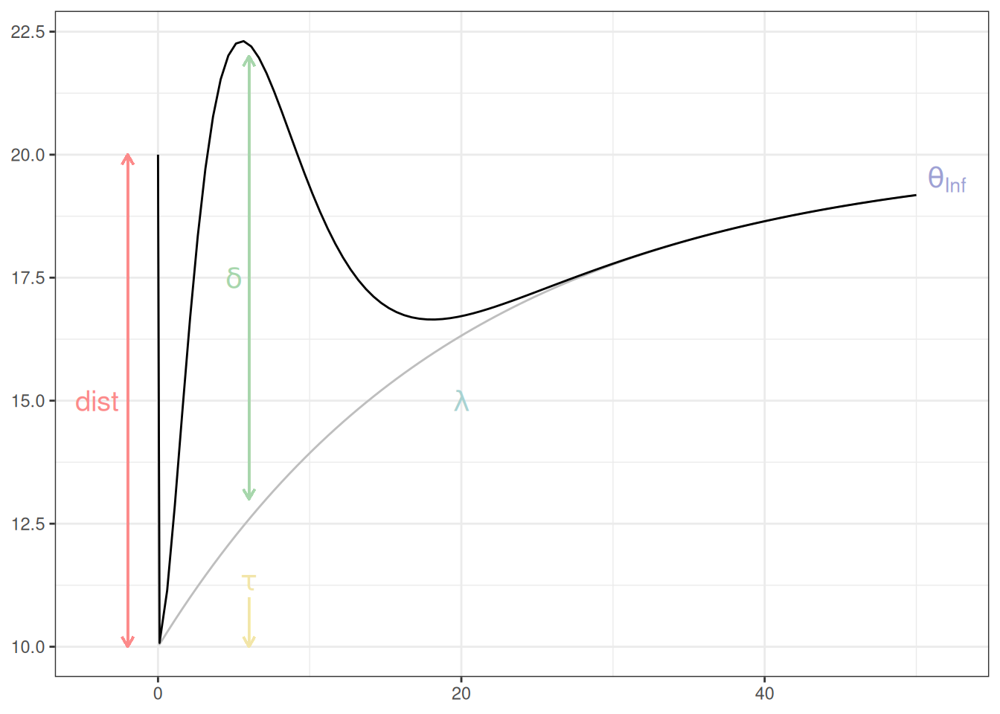

Code
ltp <- function(time, dist, thetainf, lambda) {
theta0 <- thetainf * dist
ltp <- 1 - exp(-lambda * time)
return(theta0 + (thetainf - theta0) * (ltp))
}
stp <- function(time, dist, thetainf, lambda, tau, delta) {
theta0 <- thetainf * dist
ltp <- 1 - exp(-lambda * time)
stp <- delta * (time / tau * exp(1 - time / tau))^2
return(theta0 + (thetainf - theta0) * (ltp + stp))
}
data.frame(time = seq(0.1, 50, length.out = 100)) %>%
mutate(y_stp = stp(time,
dist = 0.5, thetainf = 20, lambda = 0.05,
tau = 5, delta = 1
)) %>%
mutate(y_ltp = ltp(time, dist = 0.5, thetainf = 20, lambda = 0.05)) %>%
bind_rows(data.frame(time = 0, y_stp = 20, y_ltp = 20)) %>%
ggplot(aes(time)) +
geom_line(aes(y = y_ltp), col = "grey") +
geom_line(aes(y = y_stp)) +
theme_bw() +
annotate("text",
x = 52, y = 19.5, label = "theta[Inf]",
col = "#9ea1d4", parse = TRUE, size = 5
) +
annotate("text",
x = 20, y = 15, label = "lambda",
col = "#a8d2d1", parse = TRUE, size = 5
) +
annotate("text",
x = -4, y = 15, label = "dist",
col = "#fc8a8a", parse = TRUE, size = 5
) +
theme(axis.title = element_blank()) +
geom_segment(aes(x = -2, y = 10, xend = -2, yend = 20),
arrow = arrow(length = unit(0.2, "cm")), col = "#fc8a8a"
) +
geom_segment(aes(x = -2, y = 20, xend = -2, yend = 10),
arrow = arrow(length = unit(0.2, "cm")), col = "#fc8a8a"
) +
annotate("text",
x = 6, y = 11.3, label = "tau",
col = "#f2e5a9", parse = TRUE, size = 5
) +
annotate("text",
x = 5, y = 17.5, label = "delta",
col = "#a7d6ac", parse = TRUE, size = 5
) +
geom_segment(aes(x = 6, y = 13, xend = 6, yend = 22),
arrow = arrow(length = unit(0.2, "cm")), col = "#a7d6ac"
) +
geom_segment(aes(x = 6, y = 22, xend = 6, yend = 13),
arrow = arrow(length = unit(0.2, "cm")), col = "#a7d6ac"
) +
geom_segment(aes(x = 6, y = 11, xend = 6, yend = 10),
arrow = arrow(length = unit(0.2, "cm")), col = "#f2e5a9"
) +
theme(axis.title = element_blank())